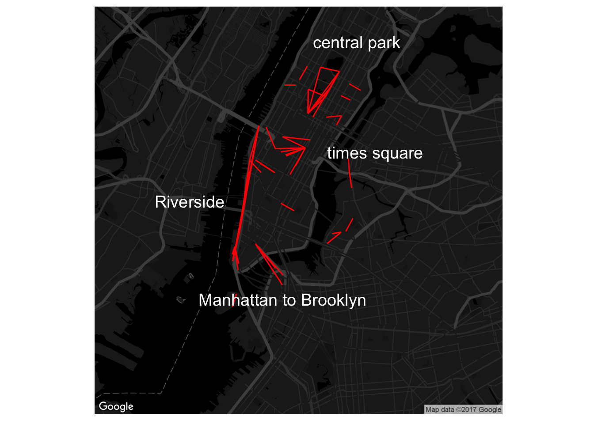

Citi Bike Usage in NYC
Seasonal Analysis

Clearly, there are fewer Citi Bike rides during the cold winter months.
## Source : https://maps.googleapis.com/maps/api/staticmap?center=east+vallage&zoom=12&size=640x640&scale=2&maptype=roadmap&style=element:geometry%7Ccolor:0x212121&style=element:labels%7Cvisibility:off&style=element:labels.icon%7Cvisibility:off&style=element:labels.text.fill%7Ccolor:0x757575&style=element:labels.text.stroke%7Ccolor:0x212121&style=feature:administrative%7Celement:geometry%7Ccolor:0x757575&style=feature:administrative.country%7Celement:labels.text.fill%7Ccolor:0x9e9e9e&style=feature:administrative.land_parcel%7Celement:%7Cvisibility:off&style=feature:administrative.locality%7Celement:labels.text.fill%7Ccolor:0xbdbdbd&style=feature:administrative.neighborhood%7Celement:%7Cvisibility:off&style=feature:poi%7Celement:labels.text.fill%7Ccolor:0x757575&style=feature:poi.park%7Celement:geometry%7Ccolor:0x181818&style=feature:poi.park%7Celement:labels.text.fill%7Ccolor:0x616161&style=feature:poi.park%7Celement:labels.text.stroke%7Ccolor:0x1b1b1b&style=feature:road%7Celement:geometry.fill%7Ccolor:0x2c2c2c&style=feature:road%7Celement:labels.text.fill%7Ccolor:0x8a8a8a&style=feature:road.arterial%7Celement:geometry%7Ccolor:0x373737&style=feature:road.highway%7Celement:geometry%7Ccolor:0x3c3c3c&style=feature:road.highway.controlled_access%7Celement:geometry%7Ccolor:0x4e4e4e&style=feature:road.local%7Celement:labels.text.fill%7Ccolor:0x616161&style=feature:transit%7Celement:labels.text.fill%7Ccolor:0x757575&style=feature:water%7Celement:geometry%7Ccolor:0x000000&style=feature:water%7Celement:labels.text.fill%7Ccolor:0x3d3d3d## Source : https://maps.googleapis.com/maps/api/geocode/json?address=east%20vallage